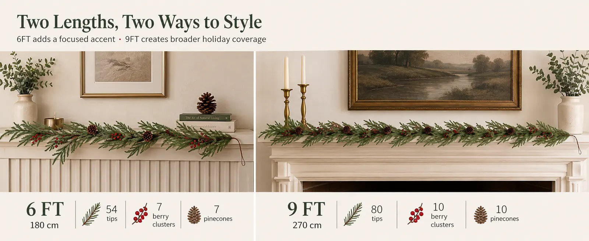
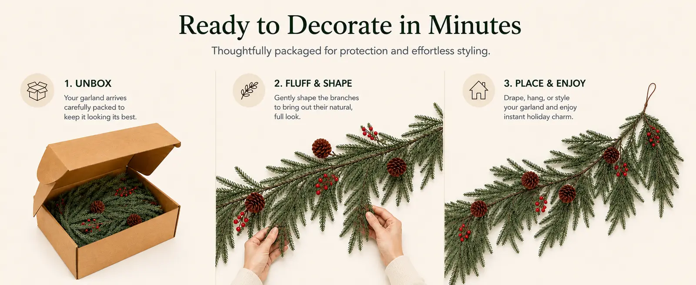
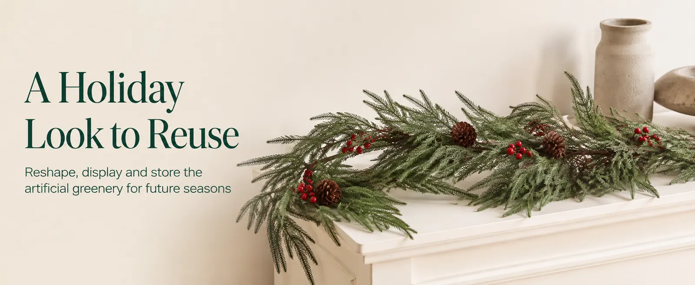
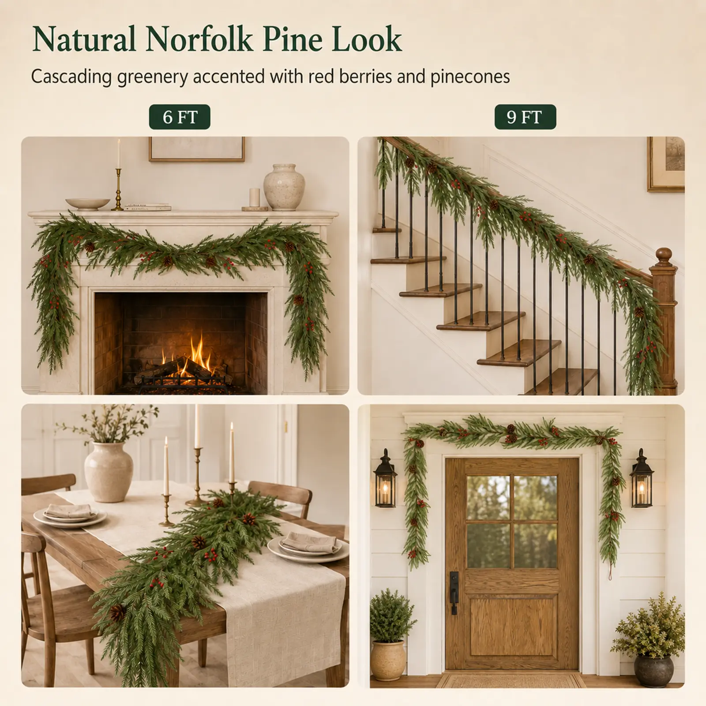
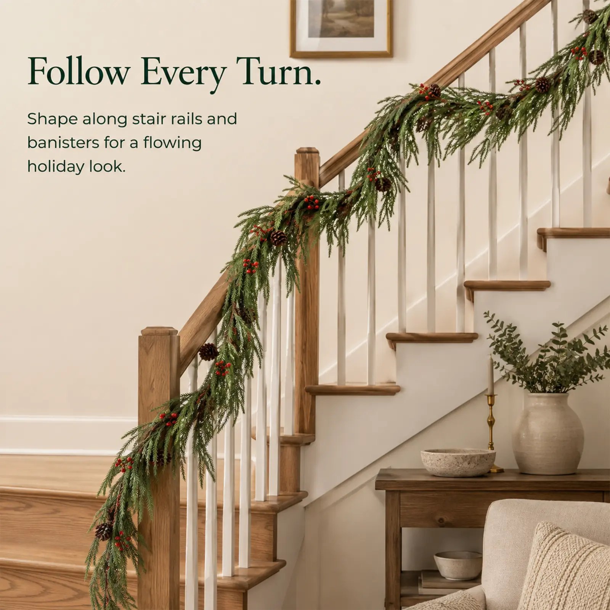
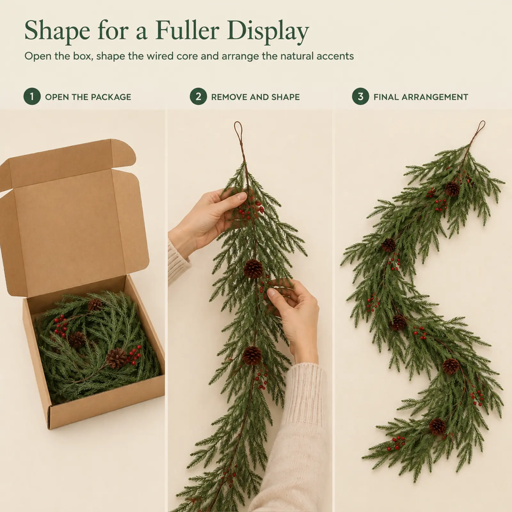

Skip to content
ZCF
.
Home
Fashion
Products
About
View Work
→
← Home
/
Products
/
Greenery
Christmas Pine Garland
Greenery · 15 images
← Back to results
A+
Main Images
Secondary Images
A+



Main Images
Secondary Images



← Previous project
suoofoi Christmas Garland · Entryway
Next project →
Autumn Wreath · Rust and Orange
← Back to results
Return to Home
↗
←
→
Open full-size
×